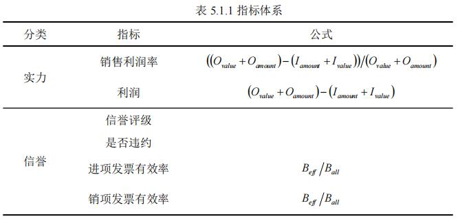
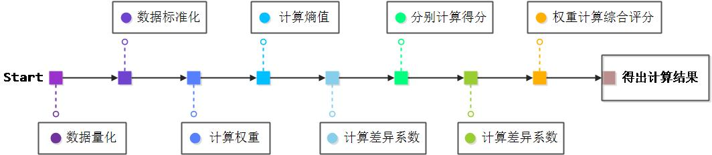

摘要
-
在实际中，银行通常依据中小微企业的实力、信誉对其信贷风险做出评估，然后依据信贷风险等因素来确定是否放贷及贷款额度、利率和期限等信贷策略。
为了量化信贷风险，给出合理的信贷策略，本文综合采用多种评价方法与模型进行分析
-
针对问题1，
为了对企业的信贷风险进行量化分析，综合考虑其两个影响因素：
企业实力和信誉对其进行评估，本文选取了客观赋权法：熵值法，
分别对企业的实力和信誉进行综合评价，最后通过权重计算得出信誉风险。
根据信贷风险，可以划分出梯度额度比例，同时，依据顾客流失率与利率的关系，
从银行利润最大化和金额分配均衡化两个角度，分别给出了合适的利率，
最终依据利率与贷款额度给出了具体的信贷策略
-
针对问题2，
由于附件中给出的是无信贷记录企业的数据，因此首先利用BP神经网络，根据进项发票信息和销项发票信息，将附件1的数据作为训练集，
预测出对应中小型企业的“信誉等级”和“是否违约”的结果。
此外，本题新增要求给出该银行在年度信贷总额为1亿元时对这些企业的信贷策略，
因此需要检查每家企业的金额是否在10万到100万之间，初次分配会有部分企业不符合约束条件，
本文利用贪心的思想，最大化影响利润，调整分配金额。其余类似第一问，即可得出信贷风险评分，确定信贷策略。
-
针对问题3，
在第一、二问基础之上，还要考虑突发因素的影响，对银行信贷策略进行调整。由于突发因素未知，因此可设为随机因子；
而后需要重新考虑实力、信誉与突发因素的影响权重。
本文采用层次分析法，将目标层设为最终的决策方案，考虑企业实力、信誉和突发因素的影响，合理确定这三者=个因素的标准权数，
利用权数求出各方案的优劣次序，最终确定调整方案。
- 关键词：熵值法、BP神经网络、层次分析法、贪心
一、问题重述
1.1 问题背景
-
在实际中，银行通常依据信贷政策、企业的交易票信息和上下游企业的影响力，
制定相应的定价策略。银行首先根据中小微企业的实力、信誉对其信贷风险做出评估，然后依据信贷风险等因素来确定是否放贷及贷款额度、利率和期限等信贷策略
1.2 问题重述
-
某银行对确定要放贷企业的贷款额度为10~100万元；年利率4%~15%为；贷款期限为1年
-
基于以上背景，团队需要根据附件给出的数据研究信贷策略，通过数学建模的方法解决以下问题：
-
问题一：
对附件1中123家企业的信贷风险进行量化分析，给出该银行在年度信贷总额固定时对这些企业的信贷策略
-
问题二：
在问题1的基础上，对附件2数据进行量化分析，并给出该银行在年度信贷总额为1亿元时对这些企业的信贷策略。
-
问题三：
综合考虑附件2中各企业的信贷风险和可能的突发因素对各企业的影响，并给出该银行在年度信贷总额为1亿元时的信贷调整策略。
二、问题分析
2.1 问题1的分析
-
问题一首先需要对企业的信贷风险进行量化分析，由于信贷风险可根据企业实力和信誉进行评估，因此可以通过熵值法分别对企业的实力和信誉进行综合评价，最后通过权重计算结合得出信誉风险。根据信贷风险，可以划分出梯度额度比例，同时，依据顾客流失率与利率的关系，可以综合考虑多方面找到最终合适的利率，最终依据利率与贷款额度给出具体的信贷策略。
2.2 问题2的分析
-
问题二基于问题一的有信贷记录企业的相关数据，给出了无信贷记录企业的数据，因此首先要对其进行分析。根据进项发票信息和销项发票信息，利用神经网络的方式，预测出对应中小型企业的“信誉等级”和“是否违约”，将第一问的相关数据作为训练对象，预测出新增的302家企业的结果，然后再用类似于问题一的方法，得出信贷风险评分。此外，
本题要求给出该银行在年度信贷总额为1亿元时对这些企业的信贷策略，因此需要检查每家企业的金额是否在10万到100万之间，调整分配金额，从而确定信贷策略。
2.3 问题3的分析
-
问题三不但要考虑前两问的影响因素，还要结合突发因素，对银行信贷策略进行调整。因此，需要重新考虑实力、信誉与突发因素的影响权重。本文采用层次分析法，将目标层设为最终的决策方案，考虑企业实力、信誉和突发因素的影响，确定各个量之间的相对重要程度，合理给出这三者的标准权数，利用权数求出各方案的优劣次序，最终确定调整方案。
三、模型假设
-
1.假设附件样本容量足够大，样本数据能够反映具体情况；
-
2.假设文中所引用的文献和结论均正确可靠；
-
3.假设放款后银行利率不会再改变；
-
4.假设其他影响信贷风险的因素占比可忽略。
四、定义与符号声明
| 符号 | 符号意义 |
| Iamount | 进项发票价税合计 |
| Ivalue | 进项负数发票金额 |
| Oamount | 销项负数发票价税合计 |
| Oamount | 销项发票金额 |
| R | 贷款年利率 |
| Li | 顾客流失率(i=a,b,c) |
| Pi | 不同信誉等级顾客所占比例(i=a,b,c) |
| Beff | 有效发票 |
| Ball | 全部发票 |
| L | 隐含层节点个数 |
| N | 输入层节点个数 |
| M | 输出层节点个数 |
五、模型的建立与求解
5.1 问题1模型的建立与求解
-
由于信贷风险可根据企业实力和信誉进行评估，因此可以通过熵值法分别对企业的实力和信誉进行综合评价，最后通过权重计算结合得出信誉风险。
根据信贷风险划分出的额度比例结合依据顾客流失率找出的利率，得出最后的信贷策略。
- 5.1.1 指标体系的建立
-
根据题目要求，银行首先根据中小微企业的实力、信誉对其信贷风险作出评估。结合附件中给出的数据，本文从实力和信誉两个方面选取计算了相关指标，如表5.1.1。
-
本文选取了利润与销售利润率作为企业实力的指标，通过进项发票与销项发票可计算得出；针对信誉方面，本文选取了信誉等级、是否违约以及发票状态作为指标，并首先对其进行量化处理。
对于信誉评级，A级设为4，B级设为3，C级设为2，D级设为1；
针对是否违约，“是”设为1，“否”设为0；针对发票有效率，“有效发票”设为1，“作废发票”设为0。
- 
- 5.1.2 基于熵值法的信贷风险量化分析
-
利用Jupyter编写Python语句[1]对以上指标进行熵值法综合评价，分别得出实力和信誉的得分和排名后，依据权重最终量化各企业的信贷风险,其具体步骤如图。
- 
- （1）模型的建立
-
首先是对数据的标准化。各项指标的计量单位以及方向不统一的情况下，需要对对数据进行标准化处理，为了避免求熵值时对数无意义，为每个0值加上较小数量级的实数0.000001。
设选取n个指标，共有个m样本，则Xij为第i个样本的第j个指标的数值(i=1,2...n;j=1,2...m)。
-
-
1.1 问题背景
-
-
1.1 问题背景
-
-
1.1 问题背景
-
-